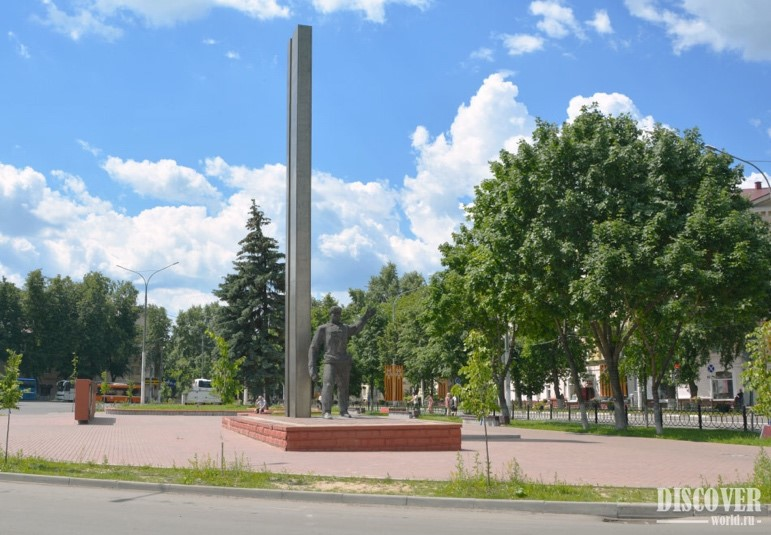
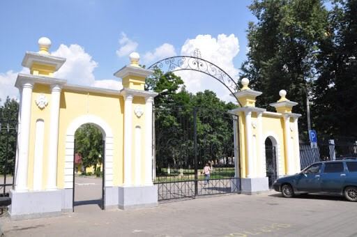
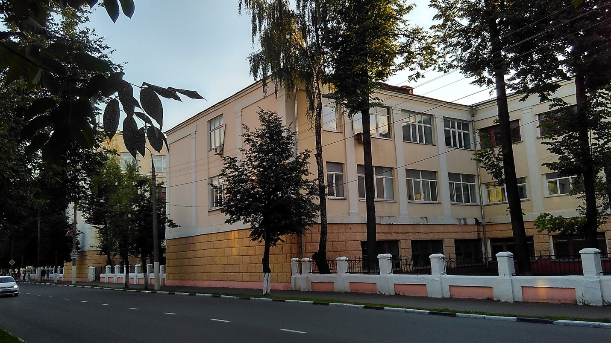
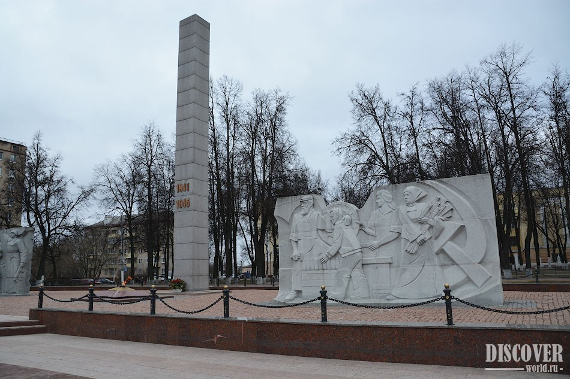
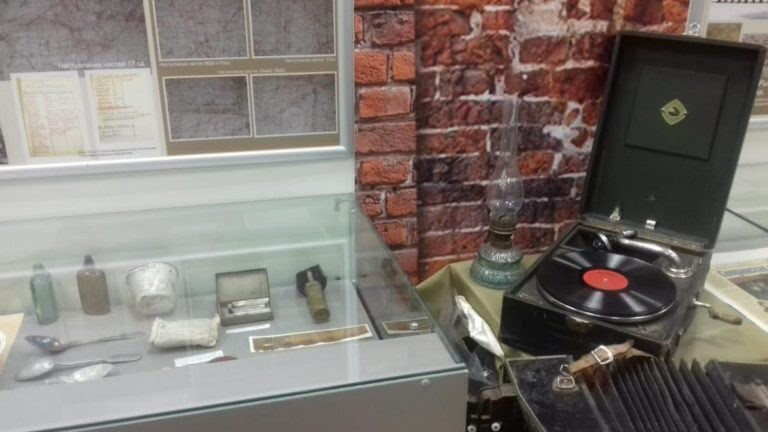
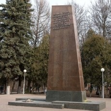
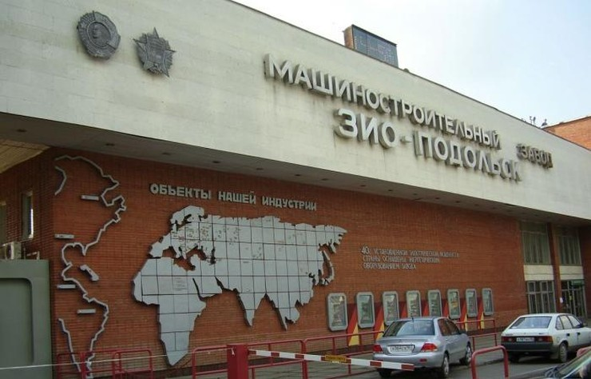
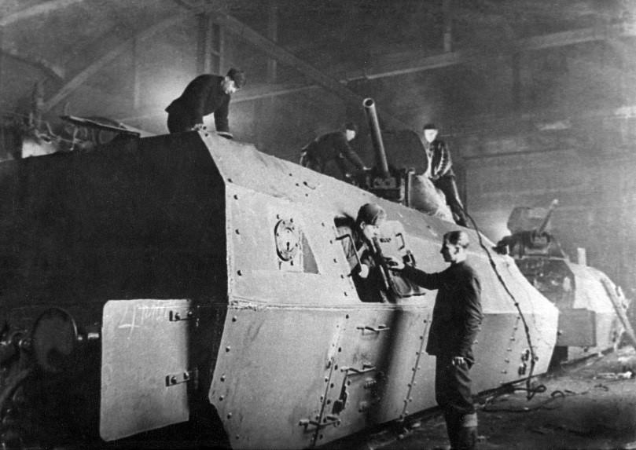

Интерактивный гид туристских маршрутов «И ратное мужество, и трудовая доблесть»
Подольск – город трудовой доблести
Проект городских экскурсий “Подольск – город трудовой доблести”,
который представляет собой новую форму социальных автобусных туров.
Идея проекта основана на том, что городской округ Подольск славился
своими трудовыми подвигами во времена Великой Отечественной Войны, но
спустя более чем пол века, трудовая доблесть граждан несправедливо начина
ет забываться. Следующим поколениям необходимо знать о подвигах народа с
воей земли. Тематические городские экскурсии нравится не только туристам, впервые при
езжающим в город, но и местным жителям, которые хотят освежить свои знания о родном го
роде и его участии в Великой Отечественной Войне. За довольно короткий промежуток вр
емени туристам предоставляется прекрасная возможность посмотреть самые известные д
остопримечательности, напоминающие о вкладе жителей Подольска в Великую Победу.
Цели
Повысить культурно-образовательный уровень местного населения, о
знакомить туристов с историей города, способствовать развитию патр
иотических чувств и убеждений;
Задачи проекта
Обратить внимание на связь прошлого и настоящего в культурной
и духовной истории города.
Познакомиться с самыми интересными исторические места, увековечивающие
подвиги местного населения во времена Великой Отечественной войны;
Привлечь внимание к трудовым подвигам тыла.
Развивать сотрудничество РГУТИС с администрацией и музеями города
Целевая аудитория
Согласно данным анкетирования были выявлены сегменты потребителей:
Школьники
Взрослые
Семьи с детьми
Молодежь.
Интерактивная карта
Протяженность маршрута: 4,6 км
Продолжительность маршрута: 2 часа 40 минут
Число туристов в группе (рекомендуемое): 15-20 человек
Описание точек маршрута
Первый объект показа
Памятник рабочему классу в Подольске первым встречает всех гостей города - он расположен на вокзальной площади.
В глаза сразу бросаются черты тоталитарного искусства, его мощь и величественность.
Второй объект показа
История создания парка культуры, как места отдыха горожан, относится к середине 19 века, вдохновителем и основателем
является Московский генерал-губернатор граф Арсений Закревский. На высоком берегу реки Пахры около Воскресенской церкви
в 1860 году были разбиты парковые аллеи с различными увеселениями для горожан. Активное развитие парк получил в советские годы:
были построены летний театр, танцевальная веранда, летний сад, стадион, кинотеатр, деревянная эстрада на 5000 зрителей.
Третий объект показа
Подольское пехотное училище (ППУ) было сформировано в январе 1940 г.
и готовило командиров пехотных взводов в 4-х учебных батальонах. Каждый
имел 4 учебные роты численностью 120-150 курсантов в каждой. Всего здесь
обучались свыше 2000 курсантов. Начальником училища был, имевший уже боевой опыт,
генерал-майор В.А.Смирнов Подольские артиллерийское и пехотное училища были созданы
в 1939-1940-е годы. До начала Великой Отечественной войны в них обучалось до 3 тыс. человек.
Начальником Подольского Пехотного училища был генерал-майор Василий Смирнов, а Подольского
Артиллерийского училища полковник Иван Стрельбицкий.
С началом войны в эти училища были направлены студенты-комсомольцы из разных высших учебных заведений СССР.
Четвёртый объект показа
Площадь Воинской Славы (ранее "Площадь 50-летия Октября") - площадь,
находящаяся в городе Подольск, посвященная Великой Отечественной войне (1941—1945).
История площади начинается в 1971 году, когда была установлена памятная гранитная плита
с высеченными фигурами советских солдат и зажжен вечный огонь. Авторы монумента - Ю. Любимов и Л. Земсков.
Пятый объект показа
Выставка открылась в 1996 году под названием «Подольчане на защите Отечества».
В её информационную основу вошли материалы архива подольского краеведа Александра
Александровича Подъячева, рассказывающие
о том, как жил Подольск в годы Великой Отечественной войны, а также о боевых подвигах наших земляков.
Шестой объект показа
В городе Подольске есть территория, расположенная на участке между улицами Комсомольская и Орждоникидзе,
прилегающая к Дому Культуры завода имени Орджоникидзе (ДК «ЗИО»), где находится сквер, обустроенный в начале
60-х годов прошлого века в память о работниках завода им.Орджоникидзе, не вернувшихся
с фронтов Великой Отечественной войны..
Седьмой объект показа
Подольский машиностроительный завод был основан по личной инициативе В.И. Ленина
в связи с острой необходимостью восстановления железнодорожного транспорта в стране
на площадке недостроенного кабельного завода. 2 мая 1919 года из ворот предприятия
вышел первый отремонтированный локомотив серии Щ-61. 1930-е годы предприятие выпускало
узкоколейные паровозы, промышленные и рудничные электровозы, железнодорожные платформы,
буровые станки, тюбинги для московского метро, а также корпуса бронетехники - БА и танков
Дыренкова, танкеток Т-27 и плавающих танков. 8 апреля 1939 года по просьбе рабочих заводу
было присвоено имя наркома тяжелой промышленности Григория Константиновича
Орджоникидзе, и он стал называться "Подольский крекинго-электровозостроительный завод им. Орджоникидзе"..
Восьмой объект показа

С первых же дней войны завод переключился на выпуск продукции военного назначения.
В октябре большую часть оборудования эвакуировали на Урал. От пятитысячного коллектива
в Подольске осталось около 400 человек. Они и получили задание построить бронепоезд.
Ровно за месяц, к концу декабря 1941-го года, бронепоезд был построен. Ему присвоили
название «Подольский рабочий». Состоял бронепоезд из двух паровозов, четырех бронеплощадок
и десяти вагонов для экипажа, бойцов и командиров. За хороший подарок фронту Комитет обороны
города объявил директору Ермакову и коллективу завода благодарность. В письме с фронта сообщалось,
что личный состав бронепоезда в первом же бою успешно выполнил поставленную командованием задачу:
полностью разгромил укрепленную высоту.
Разбил 32 дзота, уничтожил две артиллерийские батареи и до двух батальонов пехоты, сбил самолет
Советы туристам
Что взять в дорогу?
Все важные документы и деньги рекомендуем держать возле себя, а также обязательно разменяйте крупные купюры.
В дороге вам пригодятся мелкие деньги, к примеру, когда автобус остановиться на заправке, то вы сможете
купить кофе или посетить уборную.
Конечно же, в дороге вам будет необходим сотовый и прочие девайсы для развлечения, к примеру,
планшет или плеер. Также очень важно успеть зарядить все свои гаджеты и рекомендуем вам взять
с собой дополнительные аккумуляторы, ведь все гаджеты могут разрядиться в любой неподходящий момент.
Обязательно возьмите с собой в поездку теплые вещи – толстовку или свитер и теплые носки.
Также не помешает вам сменная обувь, которая будет очень удобной для отдыха.
Не берите в путешествие новую обувь, чтобы на экскурсиях она не натирала вам ноги.
Конечно же, без еды совершенно никогда. Рекомендуем вам взять с собой в дорогу бананы
или яблоки, печенье, злаковые батончики и сушки.
Самое главное не забудьте взять бутылки с питьевой водой.
Команда проекта
Научный руководитель проекта: К.э.н. доцент Романишина Татьяна
Сергеевна
Члены проектной группы: Блохина Д.Е., Евзютина О.О.